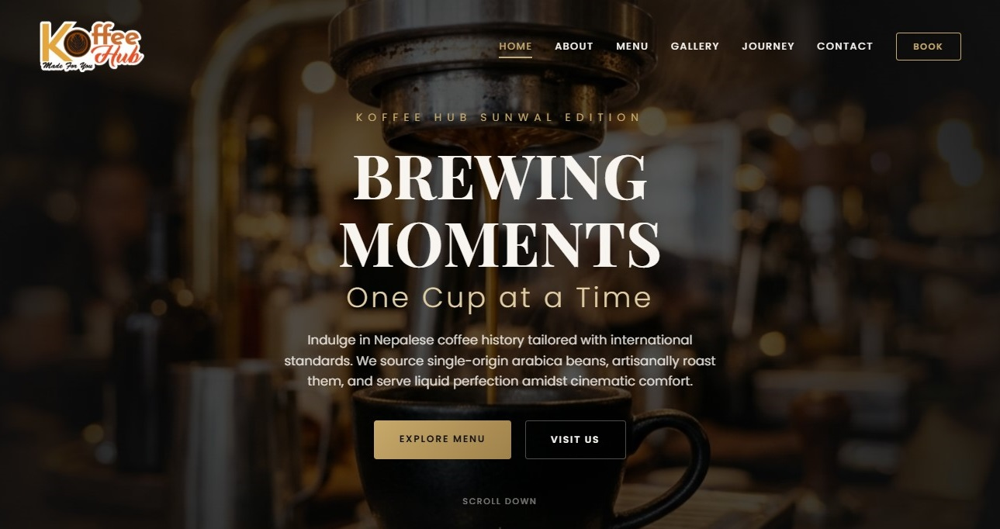
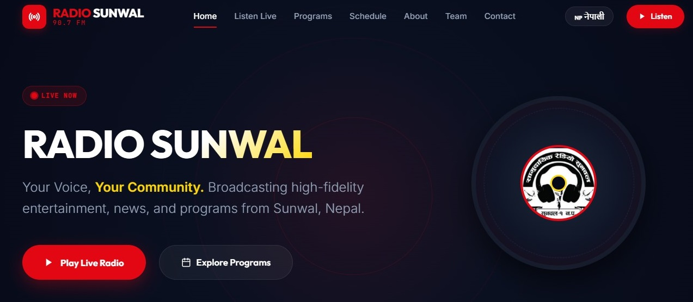

My Portfolio Projects

Coffee Shop Website
A premium responsive interface for an artisanal cafe featuring local ordering, reservation tracking, and customizable visual templates.
View Case Study
Radio Streaming Website
Designed and developed a custom radio streaming website featuring live broadcasting, mobile-friendly responsive design, and a modern user interface to deliver uninterrupted online radio listening.
View Case Study
Academic School Website
An educational web portal supporting student updates, curriculum libraries, dynamic events schedules, and virtual campus tours.
View Case Study
Leo Club Youth Website
A non-profit community system developed for the Leo Club to manage charity drives, youth programs, and volunteer logs.
View Case Study
Interactive Portfolio Website
A top-tier design showcase displaying portfolio cards with tilt effects, custom cursors, and lightweight canvas particle meshes.
View Case Study
Visual Landscape Gallery
An extensive curated catalog of high-resolution portrait, landscape, and events imagery captured on full-frame cameras.
View Gallery
Radio Sunwal Digital Network
Modernizing technology systems at Radio Sunwal with cloud broadcast setups, web streaming portals, and mobile digital feeds.
Explore Radio Projects